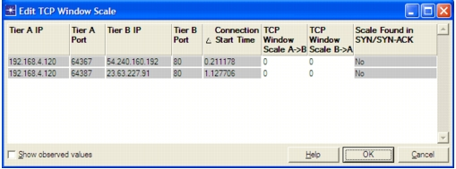

Editing the TCP Window Scale If the complete three-way handshake is missing from a packet trace, AppTransaction Xpert assumes that the window size is unscaled. This can result in AppTransaction Xpert reporting a TCP window size smaller than it actually is. Additionally, it can be confusing when the window size is reported as being much smaller than the reported in-flight data. You can alleviate this issue by setting the scale values manually. A typical example of this issue is when the Advertise Receiver window shows that the TCP window size is 64K. However, you know that the window size is larger than that. To edit the TCP window scale, select Edit > Edit TCP Window Scale… Then, in the “Edit Window Scale” dialog box, enter the correct scale values for each direction of each tier pair.  The following table lists the fields and options in the dialog box. Table K-1 Edit TCP Window Scale Field/Option Description Tier A IP / PortTier B IP/ Port Identifies the IP addresses and ports of the tier pair. Connection Start Time Identifies the connection start time of the tier pair. TCP Window Scale A->BTCP Window Scale B->A Specifies the scale value. If the cell is white, then no window scale value was found in the three-way handshake (SYN/SYN-ACK). Click on the cell to enter a value. Scale Found in SYN/SYN-ACK Indicates whether the scale value was found in the three-way handshake (SYN/SYN-ACK). Values that are not found in the three-way handshake can be edited. Show observed values Toggles the display of tier pairs where the scale value was found in the three-way handshake (SYN/SYNC-ACK). Show Connections with Known TCP Window Scale To sort the table, click on the column header. Click on the column header again to reverse the sort order.